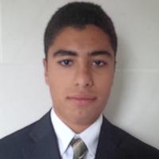

I am a hard-working and motivated individual with excellent time management and communication skills. I dedicate
myself to self-improvement and am constantly looking for new and challenging problems. I am passionate about
technology and software development, and am frequently learning new languages or working on side projects. I also
make sure to make time for atheltics and having fun. Until recently, I was a national-level springboard and
platform diver, twice placing among the top 12 in the national finals.
One situation that describes me is the creation of this website. Earlier this year, I spent the better part of a
weekend learning the basics of HTML and CSS, and then I used what I'd learned, along with a lot of web searching,
to build this website from the ground up (i.e. no bootstrap, etc.). Then, I debugged. A lot. I finally finished,
but continue to improve on it (such as by making it more responsive) and keep it up-to-date. To sum it all up, I
am resourceful and either know or can find out how to get the job done.
Currently, I am in my 1A term (first term) of Systems Design Engineering at the University of Waterloo. I am in
search of a co-op position relating to software development (mobile, web, or other) for the period of
January-April, 2015. Interested in contacting me to find out more? Click on the "Contact" tab.
